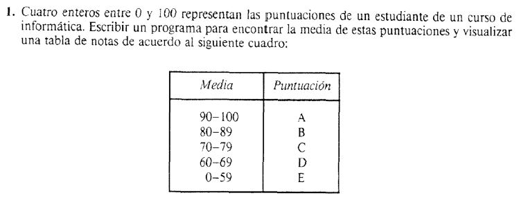

Retos Bootcamp
Reto 1
Reto 2
Reto 3
Reto 4
Reto 5
Problema 1
Problema 2
Problema 3
Problema 4
Problema 5
Problema 6
Problema 7
Problema 8
Problema 9
Problema 10
Problema 11
Problema 12
Problema 13
Problema 14
Problema 15
Problema 16
Problema 17
Problema 18
Primer Problema
Descripción

Primera nota
Segunda nota
Tercera nota
Cuarta nota
Calcular Promedio
Media obtenida
Puntuación obtenida
Media
Puntuacion
90 - 100
A
80 - 89
B
70 - 79
C
60 - 69
D
0 - 59
E